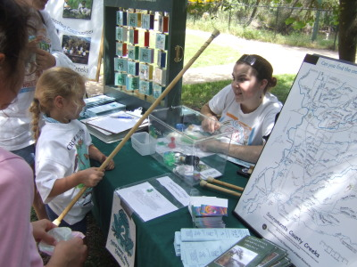
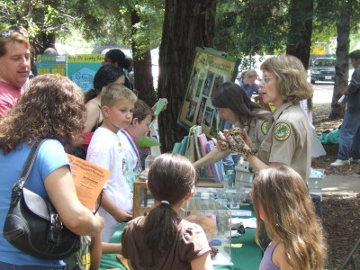
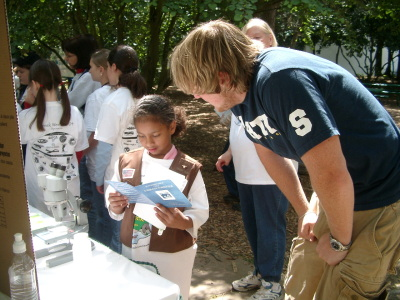

OUTREACH
Outreach is a collection of spirited individuals who are dedicated to promoting the Arcade Creek Project and environmentalism in the local community.
Outreach Event
One of the displays at an Outreach event.
Outreach Event

Outreach Event
A child examining one of our brochures
Outreach Event
encouraging students through treats

Essentially, the Outreach study acts as a liaison for the Arcade Creek Project to the community outside of Mira Loma High School. The members of Outreach exhibit the Arcade Creek Project at local environmental events such as the Salmon Festival, the California Rivers Festival, Earth Day, On the Wild Side, and Creek Week. Several Outreach students work to spread ecological awareness by visiting various elementary and middle schools around the area; this provides an opportunity to present the project and inform the children about what they can do to protect the environment. In addition, Outreach members represent the project on the Urban Creeks Council Board and can aid in securing grants for the project.